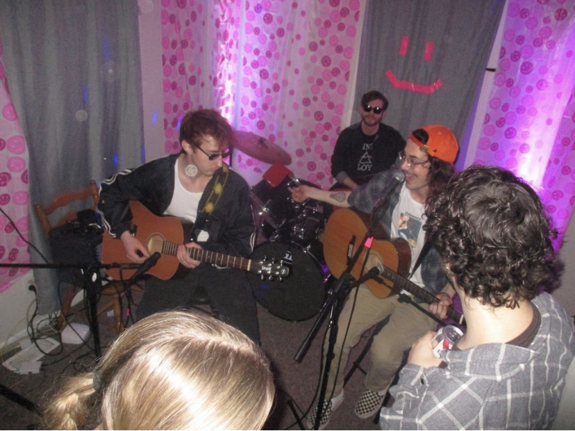

Mulch
Mulch is a local band who recently got their start earlier this semester. Beginning as an acoustic duo, the band has since grown into a full rockband drawing inspiriations from a variety of alternative rock music across the decades.
Mulch is a local band who recently got their start earlier this semester. Beginning as an acoustic duo, the band has since grown into a full rockband drawing inspiriations from a variety of alternative rock music across the decades.